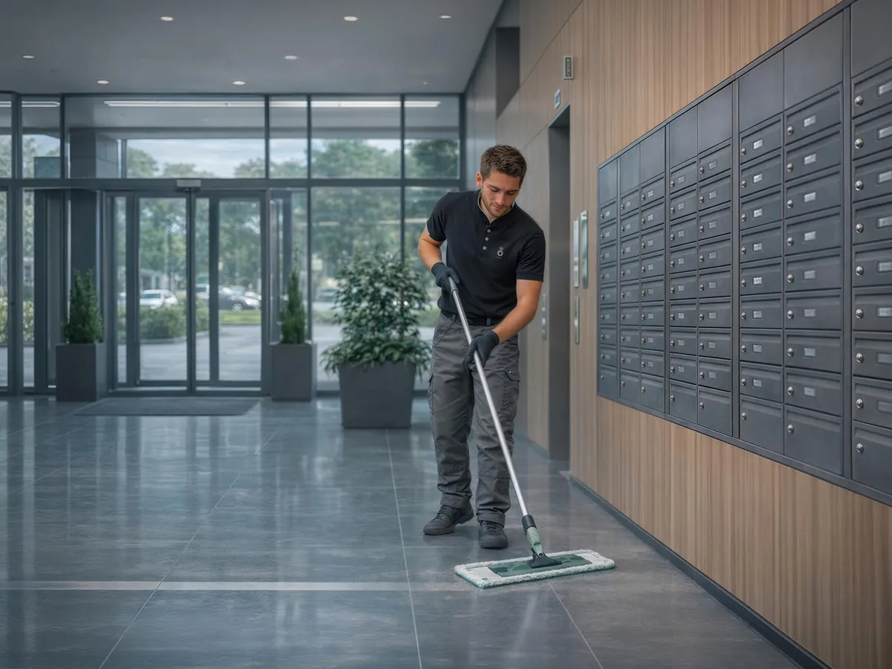
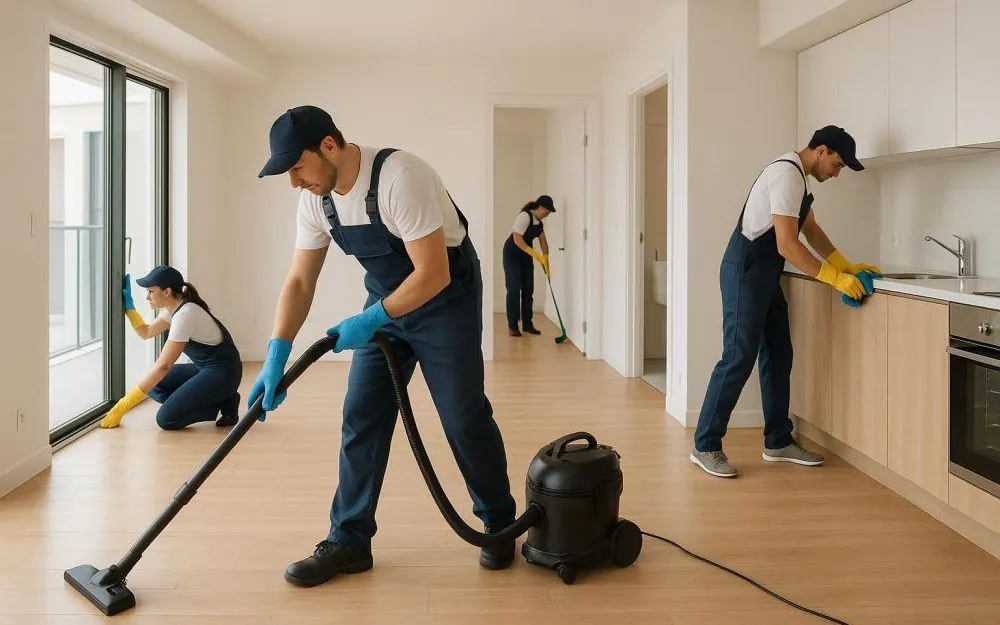
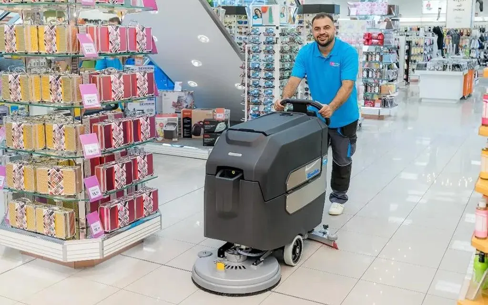
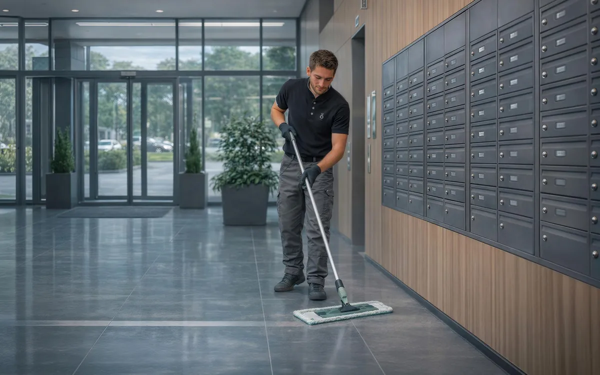

01
Nettoyage de bureaux
Des espaces de travail nets et agréables pour vos équipes et vos visiteurs, avec une organisation adaptée à vos horaires.
En savoir plus : Nettoyage de bureauxDes solutions de nettoyage adaptées à vos bureaux, locaux professionnels et espaces résidentiels, avec une attention particulière portée à chaque détail.

ATLAS CLEAN accompagne les entreprises et les particuliers de Béni Mellal et de sa région dans l'entretien de leurs espaces.
Un bureau bien tenu met les équipes dans de bonnes conditions et rassure les visiteurs. Un logement propre offre un cadre de vie plus sain et plus serein. C'est cette exigence que nous portons à chaque intervention : comprendre l'usage de vos espaces, puis en prendre soin avec méthode.
Découvrir notre approcheDes bureaux aux parties communes, chaque prestation est définie selon la nature de vos espaces, leur fréquentation et le niveau de finition attendu.
Des espaces de travail nets et agréables pour vos équipes et vos visiteurs, avec une organisation adaptée à vos horaires.
En savoir plus : Nettoyage de bureaux 02
02Maisons, appartements et villas : un intérieur soigné, pièce par pièce, selon vos priorités.
En savoir plus : Nettoyage résidentiel
03Poussières, résidus de chantier et traces : remettez vos espaces en état avant l'emménagement ou la réouverture.
En savoir plus : Nettoyage après travauxBaies vitrées, fenêtres et vitrines : une transparence impeccable qui valorise vos espaces.
En savoir plus : Nettoyage de vitres
05Boutiques, showrooms et cabinets : un espace accueillant qui renforce la confiance de vos clients.
En savoir plus : Nettoyage de locaux commerciaux
06Halls, escaliers, ascenseurs et parties communes : un cadre de vie propre pour tous les résidents.
En savoir plus : Entretien d'immeublesUn bon nettoyage ne se résume pas à un résultat visible le jour même. Il repose sur la méthode, la régularité et l'écoute de vos attentes.
Demander un devisLes zones que l'on remarque, et celles que l'on oublie : poignées, plinthes, recoins et finitions font partie du travail.
Chaque intervention est préparée en amont : périmètre, horaires, accès et matériel nécessaires sont définis avec vous.
Ponctuelle ou régulière, en journée ou en dehors des heures d'ouverture : la prestation s'ajuste à vos espaces et à vos contraintes.
Un devis lisible, un interlocuteur joignable et des échanges simples, par téléphone ou WhatsApp.
Un déroulement clair pour savoir à chaque moment ce qui a été convenu et ce qui va se passer.
Remplissez le formulaire ou écrivez-nous sur WhatsApp en quelques minutes.
Type d'espace, surface, fréquence, contraintes d'accès : nous faisons le point ensemble.
Date, horaires et déroulement sont fixés selon votre disponibilité.
Vous retrouvez un lieu net, sain et agréable à vivre ou à travailler.
Un aperçu des types d'espaces pris en charge. Filtrez par catégorie et cliquez sur une image pour l'agrandir.
Visuels d'illustration à des fins de démonstration. Ils ne représentent pas des chantiers réalisés par ATLAS CLEAN et seront remplacés par de vraies photographies.
Les villes ci-dessous sont des exemples de démonstration, à confirmer pour chaque entreprise. Votre ville n'apparaît pas ? Indiquez-la dans votre demande.
Vous ne trouvez pas votre réponse ? Posez votre question directement sur WhatsApp.
Le plus simple est de remplir le formulaire de demande de devis : il prépare automatiquement un message WhatsApp avec toutes vos informations. Vous pouvez aussi nous écrire directement sur WhatsApp ou par téléphone.
Le site présente six prestations : nettoyage de bureaux, nettoyage résidentiel, nettoyage après travaux, nettoyage de vitres, nettoyage de locaux commerciaux et entretien d'immeubles. Si votre besoin est différent, décrivez-le dans le formulaire.
Oui, le nettoyage résidentiel s'adresse aux particuliers : appartements, maisons et villas. Le contenu de la prestation est défini avec vous selon les pièces et vos priorités.
Le formulaire permet de demander une intervention ponctuelle ou une fréquence quotidienne, hebdomadaire ou mensuelle. Les modalités exactes sont précisées dans le devis.
Après votre demande, nous échangeons sur vos besoins (type d'espace, surface, accès, horaires), puis nous convenons ensemble d'une date et d'un déroulement.
Les zones présentées sur ce site (Béni Mellal, Fquih Ben Salah, Khouribga, Azilal et Khénifra) sont des exemples de démonstration. Indiquez votre ville dans le formulaire pour vérifier la disponibilité.
Quelques informations suffisent pour comprendre votre besoin. Le formulaire prépare un message WhatsApp complet, prêt à être envoyé.
Décrivez votre besoin en quelques minutes et recevez une proposition adaptée à vos espaces.